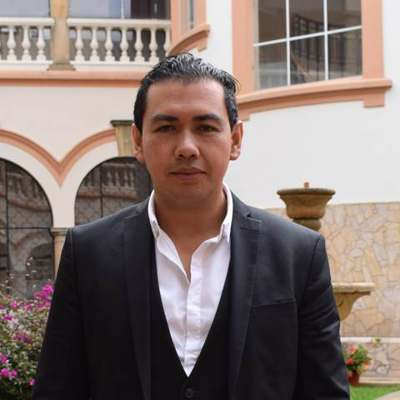

Laboratorio de investigación rizomática
Cartografía, rizoanálisis, a/r/tografía e inteligencia artificial para investigar procesos en movimiento.
Hay investigaciones que no caben en un árbol. Su objeto no tiene raíz única ni tronco ordenado: es una red de prácticas, afectos, imágenes, discursos y cuerpos que se conectan por el medio. Para esos casos, Gilles Deleuze y Félix Guattari propusieron la figura del rizoma, y varias tradiciones de investigación la convirtieron en método.
Este laboratorio reúne esa propuesta en ocho estaciones, con plantillas en Word para trabajar y referencias verificadas. Puede seguirlas en orden o entrar por cualquiera, como corresponde a un rizoma.
Abrir mi laboratorio Asistencia local de IA
Registra tu diario, conecta nodos y escribe mesetas. Cuaderno local exportable; sin registro ni envío del texto a una API.

Elver Chaparro Cardozo
Docente e investigador · Investigación cualitativa y estudios visuales
Ver otras metodologías
Qué es un rizoma
En botánica, un rizoma es un tallo que crece en horizontal y echa brotes por cualquier punto: el jengibre, la grama, el bambú. Deleuze y Guattari tomaron esa imagen en la introducción de Mil mesetas (1980) para oponerla al modelo del árbol, que organiza el conocimiento desde una raíz, un tronco y ramas jerarquizadas.
Para investigar, la diferencia es decisiva. El árbol busca el origen, la causa, la estructura profunda. El rizoma sigue conexiones: qué se enlaza con qué, por dónde pasa la intensidad, qué líneas abren o cierran posibilidades.
| Principio | Qué dice | Qué implica al investigar |
|---|---|---|
| 1 y 2. Conexión y heterogeneidad | Cualquier punto puede conectarse con cualquier otro, y lo que se conecta es de naturaleza distinta: palabras, cuerpos, objetos, instituciones. | No separar de entrada lo discursivo de lo material. Un aula es a la vez un currículo, unos pupitres, una luz, un horario y unos afectos. |
| 3. Multiplicidad | No hay un sujeto o un objeto unitario; hay multiplicidades que cambian cuando se conectan. | El participante no es una identidad fija: se estudia lo que deviene en sus relaciones. |
| 4. Ruptura asignificante | Un rizoma puede romperse por cualquier parte y rebrota siguiendo sus líneas. | Las rupturas, contradicciones y desvíos del campo no son ruido: son datos. |
| 5 y 6. Cartografía y calcomanía | El rizoma es un mapa abierto que se construye, no una calca que reproduce un modelo previo. | El investigador traza un mapa de lo que ocurre, no verifica una estructura que ya traía. |
Agenciamiento
Combinación de elementos heterogéneos que funciona junta y produce efectos. Fox y Alldred (2015) lo convierten en unidad de análisis: el ensamblaje de investigación.
Líneas
Líneas duras que segmentan y fijan, líneas flexibles y líneas de fuga que escapan y crean algo nuevo. Cartografiar es seguirlas.
Devenir
Transformación que no va de un estado A a un estado B, sino que ocurre entre. Se investiga el proceso, no solo los estados.
La cartografía como método
La traducción más desarrollada del rizoma en método viene de América Latina. Sus raíces están en el viaje de Guattari por Brasil, recogido con Suely Rolnik en Micropolítica: cartografías del deseo (Guattari y Rolnik, 2006), y en la Cartografia sentimental de Rolnik (1989). Passos, Kastrup y Escóssia (2009) la sistematizaron como método de pesquisa-intervención: investigar no es representar un objeto, sino acompañar un proceso.
La palabra método viene de metá-hódos: el camino que se sigue para llegar a una meta fijada de antemano. La cartografía lo invierte en hódos-metá: el camino que va trazando sus metas mientras se recorre. No hay protocolo cerrado, pero sí pistas.
Los cuatro gestos de la atención del cartógrafo (Kastrup, 2007)
Rastreo
Recorrer el campo sin un foco fijo, como quien barre un territorio buscando señales.
Toque
Algo llama la atención y la detiene: una pequeña irrupción que marca un punto del campo.
Aterrizaje
La atención se posa y hace zoom; el campo se reorganiza alrededor de ese punto.
Reconocimiento atento
Se sigue lo que el punto conecta, sin cerrar su sentido.
Investigar es intervenir. Romagnoli (2009) muestra que la cartografía une investigación y vida: el campo transforma al investigador y el investigador transforma el campo. Paulon y Romagnoli (2010) discuten los cuidados que esto exige. En educación, Oliveira y Paraíso (2012) cartografían el currículo con mapas, danza y dibujos, y Costa (2014) la presenta como otra forma de investigar; en salud, Ferigato y Carvalho (2011).
Rizoanálisis
Si la cartografía describe cómo estar en el campo, el rizoanálisis describe cómo trabajar con el material. Diana Masny lo desarrolló en el estudio de las literacidades múltiples.
Fragmentar y categorizar
Leer los datos como un ensamblaje de entrevistas, observaciones, imágenes, objetos y notas que funcionan juntos (Masny, 2016).
Qué significa
Preguntar qué hace un fragmento: qué conexiones produce, qué afectos moviliza, qué abre o cierra.
Describir una cultura estable
Seguir lo que deviene: el rizoanálisis interrumpe la etnografía clásica (Masny, 2014).
Preguntas para entrar al material
Masny (2013) habla de rutas rizoanalíticas: entradas sin orden fijo. Estas preguntas, inspiradas en su propuesta, sirven para empezar:
- Acontecimiento: ¿qué ocurrió aquí que no estaba previsto?
- Conexiones: ¿con qué otros elementos del material se enlaza este momento?
- Afectos: ¿qué intensidades aparecen y qué cuerpos afectan?
- Líneas: ¿qué se repite y segmenta, y qué escapa?
- Teoría: ¿qué produce leer este fragmento con un concepto (devenir, territorio, agenciamiento)?
Sellers (2015) recuerda que no existe el rizoanálisis como receta: cada estudio inventa su manera de trabajar con él. Mazzei y McCoy (2010) proponen pensar con Deleuze en lugar de aplicarlo.
Rizoma, arte e imagen
Irwin et al. (2006) describen las relaciones rizomáticas de la a/r/tografía: una investigación basada en las artes donde artista (a), investigador (r) y docente (t) se conectan por el medio. Springgay, Irwin y Kind (2005) habían propuesto seis modos de atención para esta indagación viva.
Contigüidad
Lo que ocurre entre arte, investigación y enseñanza.
Indagación viva
La investigación como práctica de vida, no como etapa.
Metáfora y metonimia
Los desplazamientos de sentido entre imagen y texto.
Aperturas
Lo que la obra deja abierto para otros.
Reverberaciones
Los efectos que una práctica produce en otras.
Exceso
Lo que desborda el control del investigador.
En español, Irwin y García Sierra (2013) presentaron la propuesta en la Revista Educación y Pedagogía de la Universidad de Antioquia; Marín-Viadel y Roldán (2019) la situaron en el panorama de la educación artística; Ramon y Alonso-Sanz (2022) llevaron la c/a/r/tografía al aula en la revista Kepes. Pérez de Lama (2009) recuerda que el mapa no representa un territorio: lo produce.
En investigación con imágenes esto supone mapas de intensidad, atlas y constelaciones sin jerarquía, recorridos fotográficos y la obra como dato y como resultado.
IA y rizoma: calcos, mapas y prompts
Una red neuronal también trabaja con conexiones, y por eso la comparación con el rizoma es tentadora (Belkina, 2026). Pero hay una diferencia de fondo: un modelo de lenguaje responde con lo más probable, con lo que ya se repitió muchas veces. Produce calcos. La cartografía busca mapas: lo que escapa, lo que todavía no tiene nombre.
Ver el calco
Pedirle la lectura más esperable de un fragmento permite ver con claridad lo dominante y, por contraste, reconocer dónde el campo se escapa.
Trazar redes
Convertir las conexiones anotadas en el diario en una lista de nodos y vínculos que se puede dibujar como red.
Releer el diario
Buscar recurrencias y elementos heterogéneos que aparecen juntos, sin pedirle que interprete.
El toque
La IA no se afecta ni reconoce un acontecimiento. Decidir qué línea seguir es atención del cartógrafo.
La IA también es parte del ensamblaje de investigación (Fox y Alldred, 2015): no es una herramienta neutral, sino un elemento que produce efectos y debe declararse. Corzo Martínez, Díaz Alemán y de la Torre Cantero (2026) usan el rizoma como modelo cartográfico para estudiar las implicaciones de la IA generativa en el dibujo digital, y Salazar Martínez (2025) lo propone para pensar una ética de la IA desde la complejidad.
Prompts para el laboratorio
Te comparto entradas de mi diario de campo. Lista las conexiones entre elementos heterogéneos que aparecen juntos (personas, objetos, espacios, normas, afectos, imágenes). Para cada conexión indica la fecha y la cita textual que la sostiene. No interpretes ni agrupes en categorías.
Lee este fragmento y escribe la interpretación más habitual o esperable que haría la literatura dominante sobre el tema. Después, sin corregirla, señala qué elementos del fragmento no caben en esa interpretación.
Convierte estas conexiones en una tabla con tres columnas: nodo de origen; nodo de destino; tipo de vínculo (material, discursivo, afectivo, institucional). Usa los nombres tal como aparecen, sin resumir.
Diseñar una investigación rizomática
Estas pistas, adaptadas de la cartografía (Passos et al., 2009) y del rizoanálisis (Masny, 2013), sirven para un proyecto de posgrado.
Pregunta de proceso
Pregunte cómo, no qué es: «¿Cómo se producen y transforman las prácticas de evaluación en el aula de artes?»
Entrar por el medio
Elija una entrada al campo (espacio, acontecimiento, práctica u objeto), justifíquela y declare su implicación.
Ensamblaje de materiales
Diario obligatorio; conversaciones, observación, imágenes, mapas, objetos y documentos coherentes con la pregunta.
Analizar siguiendo líneas
Acontecimientos, mapas de conexiones, líneas duras, flexibles y de fuga, y lectura con conceptos.
Escribir en mesetas
Capítulos autónomos sobre los nudos del mapa, con un mapa general que muestra cómo se enlazan.
Restituir
Devolver el mapa a los participantes para discutirlo: el mapa se negocia, no se impone.
Un ejemplo trabajado: cartografiar la mirada en un aula de artes
Caso inventado con fines didácticos, sin datos de personas reales.
| Pregunta | ¿Cómo se producen y se transforman los modos de mirar imágenes en un curso de artes visuales de grado décimo? |
|---|---|
| Entrada | Una sesión en la que los estudiantes llevan al aula una imagen de su celular que les guste: allí se cruzan la imagen escolar y la cotidiana. |
| Implicación | Quien investiga es también el docente del curso; lo declara y lo registra en el diario. |
| Materiales | Diario del cartógrafo, fotografías de la pizarra, imágenes de los estudiantes (con consentimiento), conversaciones en clase y un mapa dibujado por ellos. |
Las primeras sesiones se registran sin foco: qué imágenes llegan, quién las muestra, qué se dice.
Un estudiante se niega a proyectar su imagen y dice: «eso no es arte». La frase detiene la atención.
El diario se concentra en esa frontera: qué imágenes pasan al proyector y cuáles se quedan en el celular.
Se sigue lo que conecta esa frontera: el currículo, la burla del grupo, los memes, el algoritmo de la red social.
El currículo y el proyector separan lo que es arte de lo que no lo es.
El grupo negocia esa frontera con memes que circulan en voz baja.
Los estudiantes proponen un «museo de lo que no es arte»: la frontera se vuelve tema de trabajo.
Escritura en mesetas: 1) «Eso no es arte»: cómo una frase hace visible una frontera; 2) El proyector como pequeño régimen de visibilidad dentro del aula; 3) El museo: cómo una línea de fuga se convierte en proyecto colectivo. El mapa se devuelve al grupo, que lo corrige y le agrega conexiones. El ejemplo no clasifica a los estudiantes ni generaliza a otros cursos.
Calidad, ética y límites
Los criterios clásicos suponen un objeto estable. La investigación rizomática necesita otros, sin renunciar al rigor.
Validez rizomática
El estudio vale si multiplica conexiones, desestabiliza lo obvio y abre preguntas (Lather, 1993).
Trazabilidad
Diario, mapas y decisiones permiten reconstruir cómo se llegó a cada meseta.
Densidad de conexiones
Cada afirmación muestra con qué material y con qué concepto se conecta.
Implicación analizada
El investigador hace visible cómo lo afectó el campo y cómo lo afectó él (Paulon y Romagnoli, 2010).
Cuidados éticos: consentimiento que explique que el diseño es abierto; cuidado con imágenes y registros audiovisuales; atención a los efectos de la intervención; datos de participantes guardados y analizados en local.
Críticas: sin registro riguroso, el método puede volverse narración libre; Gerrard, Rudolph y Sriprakash (2017) advierten que lo poscualitativo puede olvidar las desigualdades históricas; los comités formados en diseños arborescentes pueden no reconocer estos criterios, por eso conviene explicitarlos desde el anteproyecto.
Plantillas en Word listas para usar
Se generan en su navegador, con marca de agua del laboratorio y licencia en el pie. Ninguna información sale de su equipo.
Diario del cartógrafo
Fecha, situación, gesto de atención, lo que ocurrió, afectación propia, conexiones y preguntas.
Matriz de coherencia rizomática
Pregunta de proceso, entrada, implicación, materiales, conceptos, análisis, escritura y restitución.
Mapa de conexiones y líneas
Nodos, vínculos y tipo de conexión; líneas duras, flexibles y de fuga con su evidencia.
Plantilla de meseta
Nudo del mapa, material, concepto con que se piensa, efectos y preguntas abiertas.
Consentimiento para un diseño abierto
Borrador para adaptar con su comité de ética: diseño que cambia, imágenes, restitución y retiro.
Declaración de uso de IA
Herramienta, tarea, fecha, datos entregados, qué revisó usted y qué decidió no delegar.
Las plantillas se crean en este navegador. Al pedir Word se descarga una biblioteca auxiliar desde un CDN; ese proveedor recibe la solicitud y tu IP, no el contenido del cuaderno. La primera descarga requiere conexión.
Referencias
Formato APA 7. Los DOI fueron verificados en Crossref y OpenAlex en noviembre de 2026; las obras sin DOI se citan por su edición.
Fuente filosófica
Deleuze, G., y Guattari, F. (1988). Mil mesetas: Capitalismo y esquizofrenia (J. Vázquez Pérez, Trad.). Pre-Textos. (Obra original publicada en 1980)
Guattari, F., y Rolnik, S. (2006). Micropolítica: Cartografías del deseo (F. Gómez, Trad.). Traficantes de Sueños. (Obra original publicada en 1986)
Cartografía
Costa, L. B. da. (2014). Cartografia: Uma outra forma de pesquisar. Revista Digital do LAV, 7(2). https://doi.org/10.5902/1983734815111
Ferigato, S. H., y Carvalho, S. R. (2011). Pesquisa qualitativa, cartografia e saúde: Conexões. Interface – Comunicação, Saúde, Educação, 15(38), 663–676. https://doi.org/10.1590/S1414-32832011005000037
Kastrup, V. (2007). O funcionamento da atenção no trabalho do cartógrafo. Psicologia & Sociedade, 19(1), 15–22. https://doi.org/10.1590/S0102-71822007000100003
Oliveira, T. R. M. de, y Paraíso, M. A. (2012). Mapas, dança, desenhos: A cartografia como método de pesquisa em educação. Pro-Posições, 23(3), 159–178. https://doi.org/10.1590/S0103-73072012000300010
Passos, E., Kastrup, V., y Escóssia, L. da (Orgs.). (2009). Pistas do método da cartografia: Pesquisa-intervenção e produção de subjetividade. Sulina.
Paulon, S. M., y Romagnoli, R. C. (2010). Pesquisa-intervenção e cartografia: Melindres e meandros metodológicos. Estudos e Pesquisas em Psicologia, 10(1). https://doi.org/10.12957/epp.2010.9019
Rolnik, S. (1989). Cartografia sentimental: Transformações contemporâneas do desejo. Estação Liberdade.
Romagnoli, R. C. (2009). A cartografia e a relação pesquisa e vida. Psicologia & Sociedade, 21(2), 166–173. https://doi.org/10.1590/S0102-71822009000200003
Rizoanálisis y pensamiento poscualitativo
Andrade Salazar, J. A., y Rivera Pérez, R. (2024). La investigación relacional y la metodología rizomática: Apuestas para la comprensión transmetódica de la violencia y la resistencia. En Elementos para una relación entre biopolítica, necropolítica, educación y complejidad (pp. 19–61). Editorial Universidad El Bosque. https://doi.org/10.2307/jj.34366965.4
Cetina Ortiz, W. (2026). Redes de bienestar estudiantil: Investigación rizomática en territorios escolares. Ciencia y Reflexión, 5(1), 1501–1528. https://doi.org/10.70747/cr.v5i1.800
Fox, N. J., y Alldred, P. (2015). New materialist social inquiry: Designs, methods and the research-assemblage. International Journal of Social Research Methodology, 18(4), 399–414. https://doi.org/10.1080/13645579.2014.921458
Gerrard, J., Rudolph, S., y Sriprakash, A. (2017). The politics of post-qualitative inquiry: History and power. Qualitative Inquiry, 23(5), 384–394. https://doi.org/10.1177/1077800416672694
Lather, P. (1993). Fertile obsession: Validity after poststructuralism. The Sociological Quarterly, 34(4), 673–693. https://doi.org/10.1111/j.1533-8525.1993.tb00112.x
Lather, P., y St. Pierre, E. A. (2013). Post-qualitative research. International Journal of Qualitative Studies in Education, 26(6), 629–633. https://doi.org/10.1080/09518398.2013.788752
MacLure, M. (2013). Researching without representation? Language and materiality in post-qualitative methodology. International Journal of Qualitative Studies in Education, 26(6), 658–667. https://doi.org/10.1080/09518398.2013.788755
Masny, D. (2013). Rhizoanalytic pathways in qualitative research. Qualitative Inquiry, 19(5), 339–348. https://doi.org/10.1177/1077800413479559
Masny, D. (2014). Disrupting ethnography through rhizoanalysis. Qualitative Research in Education, 3(3), 345–363. https://doi.org/10.4471/qre.2014.51
Masny, D. (2016). Problematizing qualitative research: Reading a data assemblage with rhizoanalysis. Qualitative Inquiry, 22(8), 666–675. https://doi.org/10.1177/1532708616636744
Mazzei, L. A., y McCoy, K. (2010). Thinking with Deleuze in qualitative research. International Journal of Qualitative Studies in Education, 23(5), 503–509. https://doi.org/10.1080/09518398.2010.500634
Sellers, M. (2015). …working with (a) rhizoanalysis…and…working (with) a rhizoanalysis…. Complicity: An International Journal of Complexity and Education, 12(1). https://doi.org/10.29173/cmplct23166
St. Pierre, E. A. (2014). A brief and personal history of post qualitative research: Toward "post inquiry". Journal of Curriculum Theorizing, 30(2). https://doi.org/10.63997/jct.v30i2.521
Arte, imagen y mapa
Irwin, R. L., Beer, R., Springgay, S., Grauer, K., Xiong, G., y Bickel, B. (2006). The rhizomatic relations of a/r/tography. Studies in Art Education, 48(1), 70–88. https://doi.org/10.1080/00393541.2006.11650500
Irwin, R. L., y García Sierra, D. (2013). La práctica de la a/r/tografía. Revista Educación y Pedagogía, 25(65), 106–113.
Marín-Viadel, R., y Roldán, J. (2019). A/r/tografía e investigación educativa basada en artes visuales en el panorama de las metodologías de investigación en educación artística. Arte, Individuo y Sociedad, 31(4), 881–895. https://doi.org/10.5209/aris.63409
Pérez de Lama, J. (2009). La avispa y la orquídea hacen mapa en el seno de un rizoma: Cartografía y máquinas, releyendo a Deleuze y Guattari. Pro-Posições, 20(3), 121–145. https://doi.org/10.1590/S0103-73072009000300009
Ramon, R., y Alonso-Sanz, A. (2022). La c/a/r/tografía en el aula como instrumento de desarrollo creativo, visual y de pensamiento complejo a través de las artes. Kepes, 19(25), 531–563. https://doi.org/10.17151/kepes.2022.19.25.18
Springgay, S., Irwin, R. L., y Kind, S. W. (2005). A/r/tography as living inquiry through art and text. Qualitative Inquiry, 11(6), 897–912. https://doi.org/10.1177/1077800405280696
IA y rizoma
Belkina, A. M. (2026). Rhizome and neural networks: Deleuze and Guattari's thought in the age of generative artificial intelligence. Herald of Omsk University, 31(1), 87–92. https://doi.org/10.24147/1812-3996.2026.1.87-92
Corzo Martínez, J., Díaz Alemán, M. D., y de la Torre Cantero, J. (2026). El rizoma como modelo cartográfico para el estudio de las implicaciones de las inteligencias artificiales generativas en el dibujo digital. AusArt, 14(2). https://doi.org/10.1387/ausart.28416
Salazar Martínez, C. (2025). Rizoma y complejidad para la ética en inteligencia artificial. En Éticas contemporáneas de la narración (pp. 141–158). Editorial EAFIT. https://doi.org/10.17230/9789587209983ch8